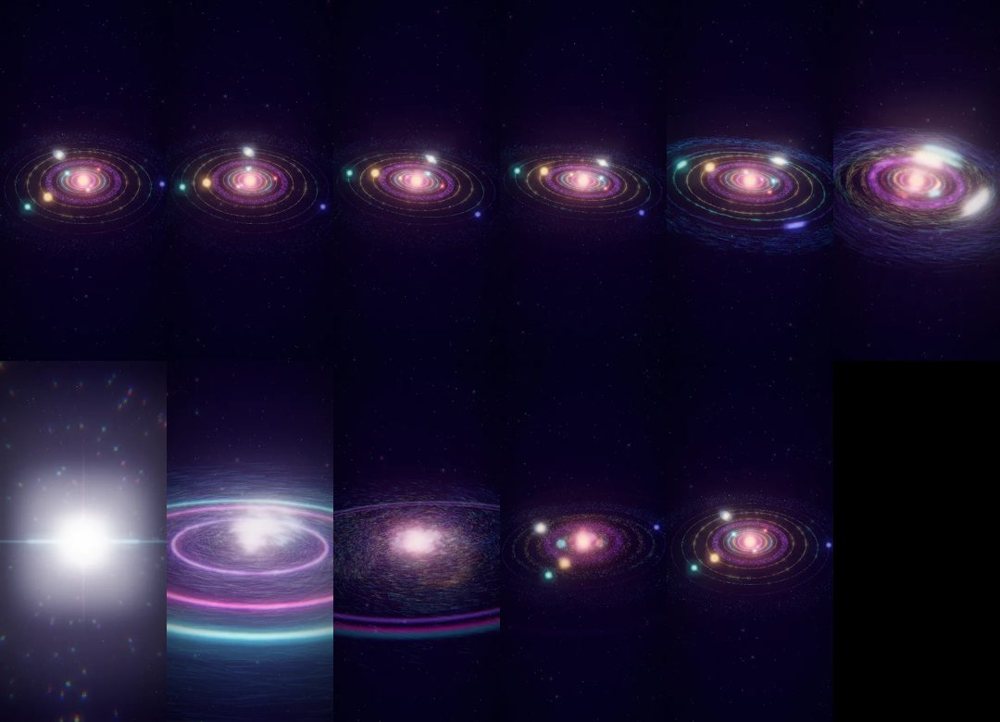
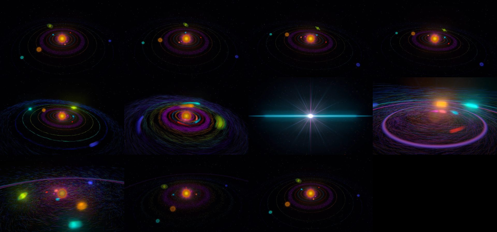
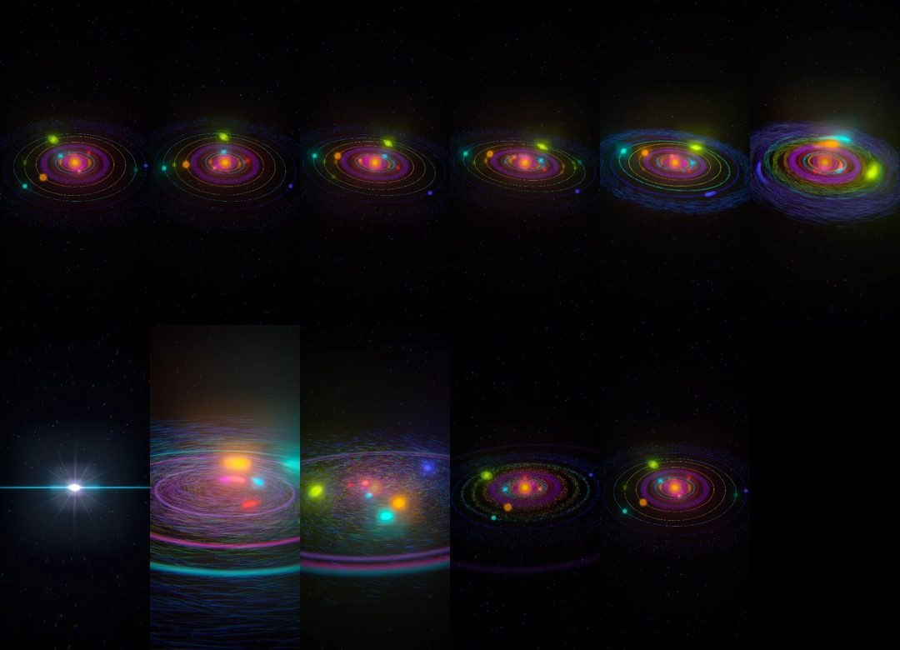

Baseline
$0.454 · 2.4 minThe prompt exactly as typed, no plugin.

Phone frames

desktop: seamless loopphone: seamless loop100performance 100accessibility 93best practices 90seo
Open it live ↗ neon-solar-implosion.html
threejs/neon-implosion
Both sides got exactly this prompt. The plugin passes only if its run beats the baseline, and its turn-1 first version must already match it.
Open it and watch several loops at desktop and phone sizes. It must render without errors, loop seamlessly every 10 seconds with no visible jump, and hold a smooth frame rate. Rubric: how vivid and striking it is, whether it clearly reads as a solar system imploding into particles, and craft (colour, glow, motion, timing).
Made with plugin 6128ee8, the current plugin.
The prompt exactly as typed, no plugin.
Open it live ↗ neon-solar-implosion.html
Turn 1 of /be-ambitious: the cheap preview, before the checkpoint.


Open it live ↗ .ambition/direct/index.html
/be-ambitious after pushing on.


Open it live ↗ final/index.html
The work at the end of each turn that changed it, with what had been spent by then. Turns that only talked are left out.

Full run: 10.2× the baseline's cost and 16.1× its time. The preview alone: 3.4× and 4.5×.
You asked for: <original> Still delivers: <the original ask, in full, as the same kind of thing> Genre bar: <what this kind of thing is judged on by its users and best practitioners, including qualities judged by perception> Aiming at: <restated goal>, because <reason> Excellent means: <specific hard target, on the genre bar and on the goal> Proven by: <outside check, including how the genre bar is judged and the comparison with the direct version> Needs access to: <gaps, or "nothing new"> Mode: plan|build · answerer · reviewer
Full transcript, with every tool call: on GitHub.
Full transcript, with every tool call: on GitHub.